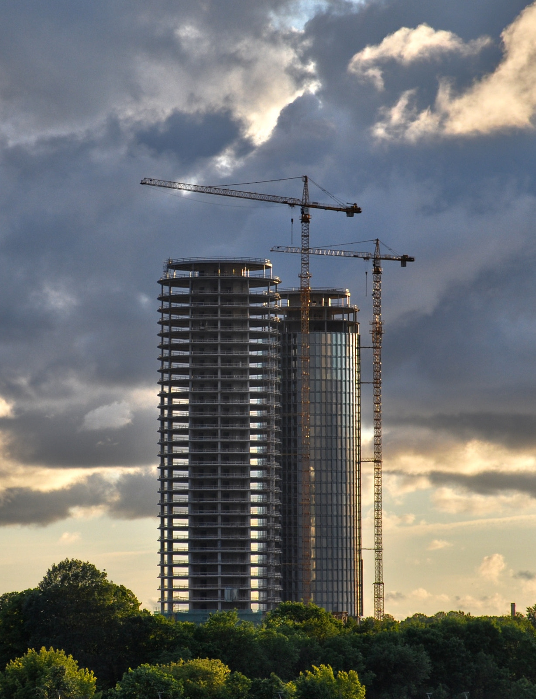

Jumtu ekspertīze
Jumta stāvokļa, bojājumu cēloņu un turpmākās rīcības izvērtējums.
Skatīt pakalpojumuJumtu, hidroizolācijas, fasāžu un būvniecības mezglu apsekošana, izvērtēšana un praktiskas konsultācijas.
Pakalpojumi
Pieci tehniskā atbalsta virzieni jumtiem, fasādēm, hidroizolācijai un būvniecības procesam.
Jumta stāvokļa, bojājumu cēloņu un turpmākās rīcības izvērtējums.
Skatīt pakalpojumu

PĀRBAUDĀMI FAKTI
Sertifikātu sadaļā pieejami publiskai apskatei sagatavoti kvalifikācijas un profesionālo apliecinājumu dokumenti.
Skatīt sertifikātusObjektu sadaļā redzamas ēkas un situācijas, kur būtiska ir tehniska precizitāte un neatkarīgs izvērtējums.
Skatīt objektusJuridiskajā sadaļā pieejama uzņēmuma reģistrācijas, kontaktu un BIS informācija.
Skatīt juridisko informācijuKAD SAZINĀTIES
Jumtu ekspertīžu biroju piesaista situācijās, kur vizuāls minējums nav pietiekams un vajadzīgs skaidrs, praktiski izmantojams tehniskais vērtējums.
Aprakstīt situācijuJumts tek vai bojājuma vieta nav skaidra.
Jāizvērtē esošs jumta, fasādes vai hidroizolācijas stāvoklis.
Būvdarbu laikā jāpārbauda kvalitāte un mezglu izbūve.
Pirms remonta, pārbūves vai projekta korekcijām jāpieņem pamatots lēmums.
Nepieciešams sagatavot informāciju sarunai ar būvnieku, apsaimniekotāju vai īpašnieku.
DARBA PROCESS
Pirms apsekošanas vai konsultācijas tiek precizēta situācija, lai pārbaude būtu mērķtiecīga un klientam saprotama.
Klients apraksta situāciju, pievieno foto, PDF, rasējumus vai citu pieejamo informāciju.
Tiek pārskatīti iesniegtie materiāli un precizēts, vai nepieciešama konsultācija, apsekošana vai dokumentu analīze.
Situācija tiek izvērtēta objektā vai attālināti, atkarībā no jautājuma un pieejamās informācijas.
Klients saņem praktiski izmantojamus ieteikumus turpmākai rīcībai.
Aprakstiet situāciju, pievienojiet pieejamos failus un izvēlieties vēlamo konsultācijas laiku. Jumtu ekspertīžu birojs pārbaudīs informāciju un sazināsies par nākamo soli.